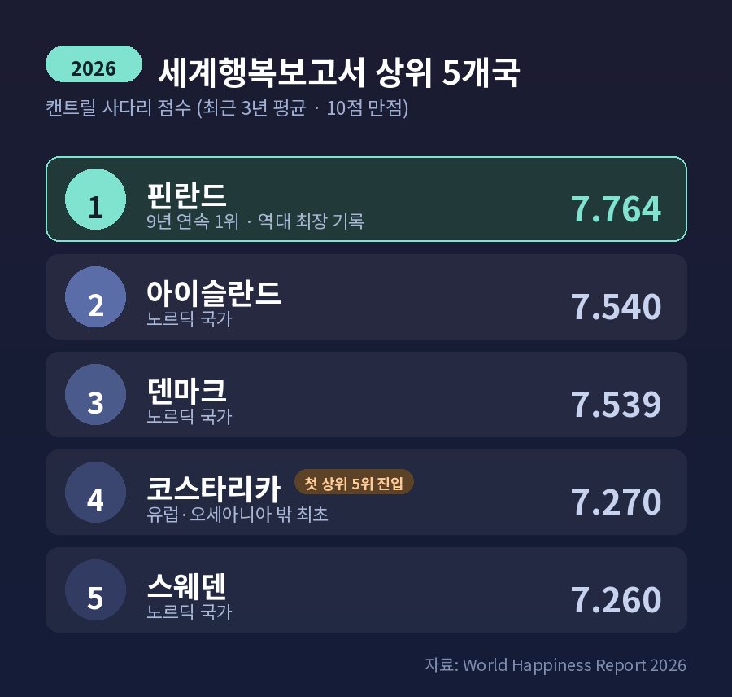
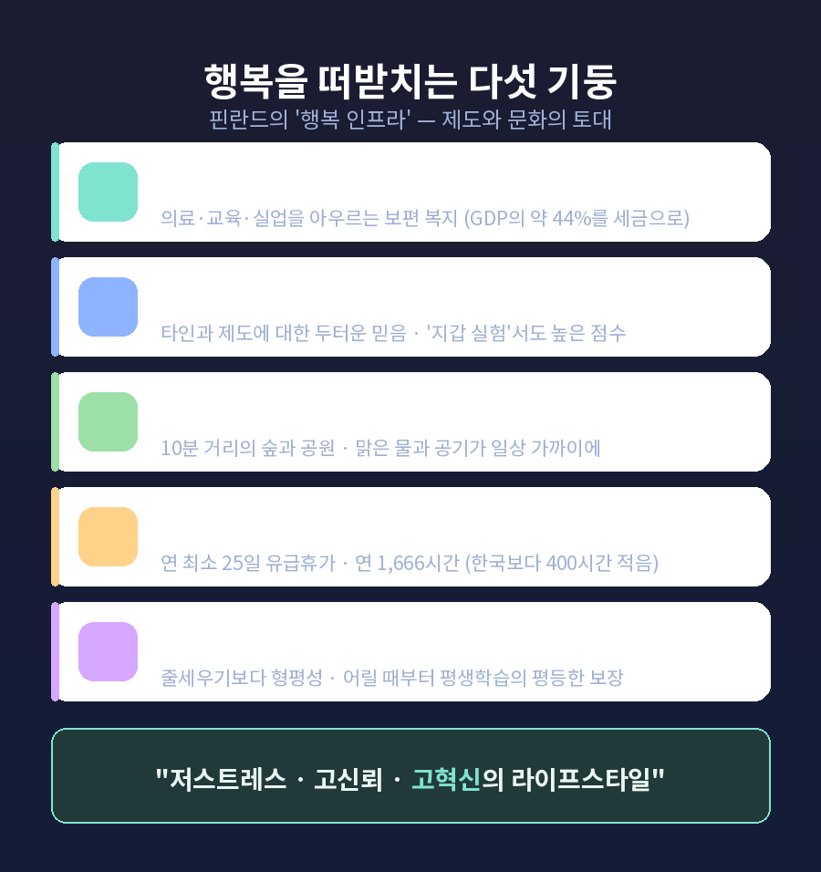

이번 글에서는 핀란드가 왜 가장 행복한 나라로 꼽히는지 정리해 보겠습니다.
먼저 결론부터 말씀드립니다. 핀란드는 2026년 세계행복보고서에서 9년 연속 1위에 올랐습니다. 점수는 7.764점입니다. 비결은 한두 가지 기질이 아니라, 신뢰·복지·자연·일과 삶의 균형이 맞물린 '행복의 인프라'에 있습니다. 다만 행복지수라는 잣대 자체의 한계도 함께 짚겠습니다.
핀란드는 2026년 세계행복보고서(World Happiness Report)에서 또 한 번 정상에 섰습니다.
9년 연속 1위. 역대 최장 기록입니다.
뒤를 이은 나라는 2위 아이슬란드(7.540), 3위 덴마크(7.539)였습니다. 노르딕 5개국이 모두 상위 6위 안에 들었습니다.
그런데 2026년에는 작은 균열도 보였습니다.
코스타리카가 4위에 오른 것입니다. 유럽과 오세아니아 밖의 나라가 처음으로 상위 5위에 진입했습니다.
'북유럽 = 행복'이라는 오랜 공식에 처음으로 다른 색이 섞인 셈입니다.

여기서 흔한 오해를 하나 풀고 가겠습니다.
핀란드가 복지나 GDP 점수를 합산해 1등을 한 것이 아닙니다.
순위를 정하는 핵심 측정값은 '캔트릴 사다리'라는 질문 단 하나입니다.
갤럽 세계여론조사는 응답자에게 이렇게 묻습니다. "0(최악의 삶)부터 10(최상의 삶)까지 사다리를 상상해 보세요. 지금 당신은 몇 번째 칸에 서 있습니까?"
각자가 자기 삶을 0에서 10 사이 숫자로 평가하는 것입니다.
표본은 보통 나라마다 매년 약 1,000명, 순위는 변동을 줄이기 위해 최근 3년 평균을 씁니다.
흔히 말하는 6가지 요소 — 1인당 GDP, 사회적 지원, 건강기대수명, 삶을 선택할 자유, 관용, 부패 인식 — 는 순위 공식이 아닙니다. "왜 어떤 나라가 더 높은가"를 설명하기 위한 분석 도구입니다.
다시 말해, 핀란드 사람들이 스스로 자기 삶을 평균 7.7점 안팎으로 높게 평가했다는 것이 1위의 직접 근거입니다.
핀란드 측은 행복의 비결을 개인의 성격이 아니라 제도와 문화의 토대, 곧 '행복의 인프라'로 설명합니다.
크게 다섯 개의 기둥이 있습니다.
첫째, 복지국가입니다. 의료·교육·실업 지원을 아우르는 보편 복지가 불안을 줄여 줍니다. 대신 핀란드는 GDP의 약 44%를 세금으로 걷습니다. 부담은 크지만 그 대가로 받는 서비스가 분명해, 핀란드인들은 크게 불만을 갖지 않는다는 분석입니다.
둘째, 신뢰 사회입니다. 타인과 제도에 대한 믿음이 두텁습니다. 보고서가 함께 분석한 '지갑 실험'에서도 핀란드는 높은 점수를 받았습니다. 잃어버린 지갑이 주인에게 돌아올 것이라 믿는 정도가 높다는 뜻입니다.
셋째, 자연과의 가까움입니다. 핀란드에서는 공원이나 숲까지 10분 이상 걸리는 곳을 찾기가 어렵습니다. 맑은 물과 공기, 훼손되지 않은 자연이 일상 가까이에 있습니다.
넷째, 일과 삶의 균형입니다. 업무가 끝나면 진짜로 끝납니다. 대부분의 노동자가 연 최소 25일의 유급휴가를 받습니다. 연간 노동시간은 약 1,666시간으로, 한국(약 2,071시간)보다 400시간 이상 짧습니다.
다섯째, 교육입니다. 경쟁과 줄세우기보다 형평성에 무게를 둡니다. 평생학습에 대한 평등한 접근을 어릴 때부터 보장합니다.
핀란드 측은 이 모두를 한 줄로 압축합니다. "저스트레스·고신뢰·고혁신의 라이프스타일."

핀란드를 이야기할 때 빠지지 않는 말이 하나 있습니다.
시수(sisu)입니다.
우리말로 옮기기 어려운 단어로, 용기·회복탄력성·끈기·인내가 한데 묶인 개념입니다. 감당하기 힘든 역경을 묵묵히 뚫고 나아가는 능력을 가리킵니다.
역사적으로도 무게가 있습니다. 1917년 러시아로부터 독립을 선언할 때 민족을 묶어 준 정신으로, 1939년 겨울전쟁에서 소련에 맞선 저항의 핵심이기도 했습니다.
흥미로운 점은 시수가 '늘 즐겁다'는 뜻의 행복이 아니라는 것입니다.
들뜬 즐거움보다 안정과 만족, 회복력에 가깝습니다. 겸손, 미니멀리즘, 정말 중요한 것에 집중하기와 연결됩니다.
다만 시수를 '핀란드 행복의 비밀 병기'로 과장하는 것은 조심해야 합니다. 어디까지나 문화적 자기서사의 한 층위로 보는 편이 정확합니다.
가장 행복한 나라라는 타이틀에는 오해와 비판이 따라붙습니다. 균형 있게 짚겠습니다.
먼저 측정 방식의 한계입니다. 사다리 점수는 내면의 정신 상태보다 외부 조건에 대한 평가에 가깝습니다. 정서적 웰빙 전체를 담지 못한다는 지적이 있습니다. 나라당 표본이 약 1,000명대라 거대한 인구의 감정을 다 담기 어렵다는 비판, 사다리 질문이 문화마다 다르게 해석된다는 비판도 있습니다. 반면 보고서 측은 "6개 변수가 국가 간 격차의 4분의 3 이상을 설명한다"며 일관성을 강조합니다.
다음은 '행복한데 왜 자살 이야기가 나오나'라는 오랜 통념입니다.
이 부분은 사실관계를 분명히 할 필요가 있습니다.
1990년에는 핀란드 자살률이 세계 2위로 실제 높았습니다. 그러나 수십 년에 걸친 공중보건 노력으로 자살이 1990년의 절반 이하로 줄었습니다. 현재는 세계 22위 수준으로, 미국보다 낮습니다.
핀란드의 한 교수는 우울과 자살을 어둡고 추운 기후 탓으로만 돌리는 시각을 경계합니다. "세계 어디서든 우울하면 비슷한 자살 위험을 진다"는 것입니다.
'행복 1위지만 사실은 가장 우울한 나라'라는 단정은 낡은 서사입니다. 그렇다고 '완벽한 유토피아'라는 반대편 미화도 경계해야 합니다.
세금 이야기도 마찬가지입니다. 핀란드의 세부담은 GDP의 약 44%로 높지만, 그 대가가 명확해 '높은 세금 = 불행'이라는 단순 도식은 이 나라에선 성립하지 않습니다.
같은 보고서에서 한국은 어디쯤일까요.
2026년 기준 한국은 67위, 6.040점입니다. 3년 연속 하락입니다. 집계 시점에 따라 50위권 후반에서 60위권 후반을 오갑니다. 핀란드와는 1.7점가량 차이가 납니다.
한국은 1인당 GDP, 기대수명, 사회적 지원에서는 비교적 높은 점수를 받았습니다. 다만 기부·자선 같은 공동체 기여와 부패 인식에서 상위국에 못 미쳤습니다.
핀란드에서 빌려올 만한 것으로 거론되는 항목은 이렇습니다.
물론 그대로 복사할 수는 없습니다. 핀란드 인구는 약 560만으로, 역사와 사회 조건이 한국과 많이 다릅니다.
'한국은 불행, 핀란드는 천국'이라는 이분법은 피하는 편이 좋겠습니다. 구체적인 제도와 문화의 교훈으로 받아들이는 것이 더 쓸모 있습니다.
끝으로 한 마디만 더 드리겠습니다.
2025년과 2026년 보고서가 함께 강조한 것은 친절과 관계, 그리고 함께 먹는 식사였습니다. 핀란드가 오래 1위를 지킨 이유와 정확히 겹치는 대목입니다.
결국 핀란드가 일러 주는 것은 화려한 비결이 아닙니다.
— 행복은 더 가지는 데서가 아니라, 서로 믿고 충분함에 만족하는 데서 자란다는 것.
가장 행복한 나라의 비밀이 무엇이냐고 물으신다면, 저는 '신뢰와 충분함'이라고 답하겠습니다.